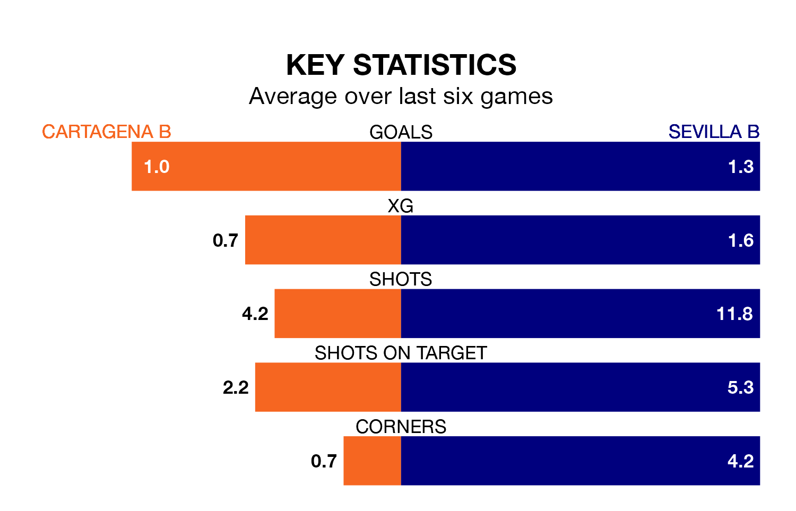

Mid-season relegation candidates Cartagena B face a challenge against high-flying Sevilla B at the Estadio Municipal Cartagonova on Sunday.
Cartagena B are rooted to the bottom of the Segunda División RFEF Group 4 table, and have picked up two wins and four draws in their 18 games to date.
Sevilla B, meanwhile, are top of the standings with 37 points, having won 11 and drawn four.
With 33 goals in 18 games so far this season, Sevilla B are the league's highest scorers with 1.8 goals per game. And they are conceding fewer than average, letting in nine goals at a rate of 0.5 per game.
Cartagena B, meanwhile, are below average scorers, with 0.8 goals per game, compared to a league average of 1.0. They have conceded 1.8 goals per game.
The hosts are in disappointing form in Segunda División RFEF Group 4, with one win and two draws from their last six games.
With three wins and three draws over that period, the away side's form is much better – they have taken 12 points from 18, compared to Cartagena B's five.
In the last three years, Cartagena B and Sevilla B have played each other on three occasions. They won one each, and they drew once.
Their last meeting was on September 10, when Sevilla B won 3-0 at home.
Cartagena B's last match was on Sunday, a 4-1 loss against CD San Roque de Lepe.
Sevilla B drew 0-0 with Orihuela CF last time out, also on Sunday.
Updated: 06:13 (UTC), 18/01/24